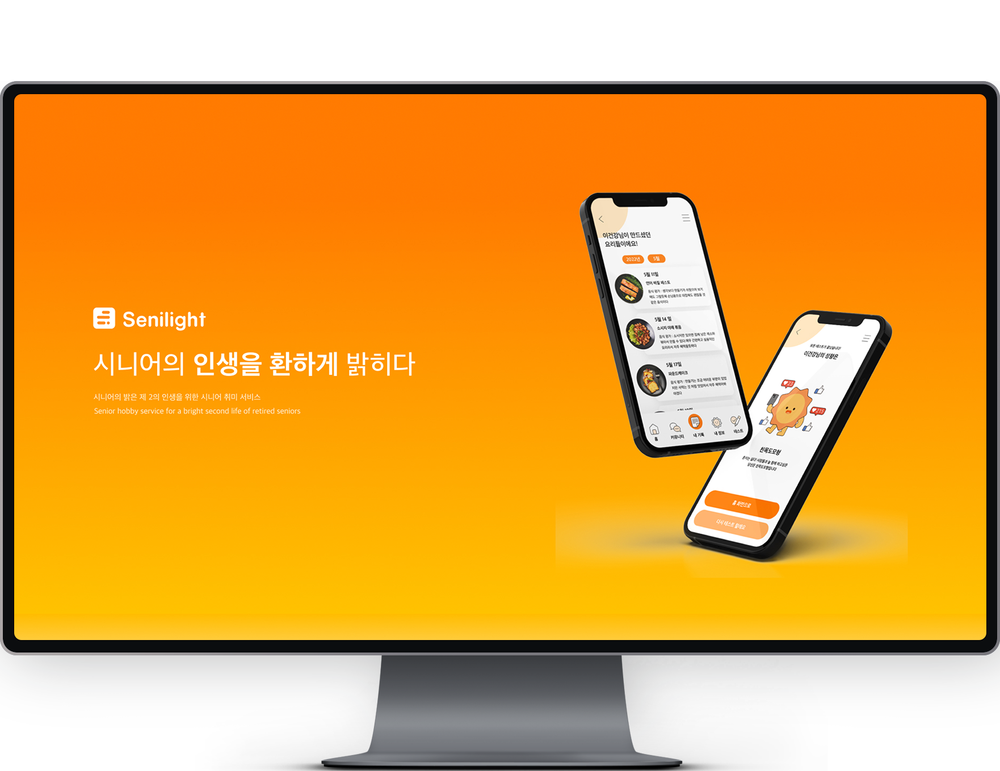
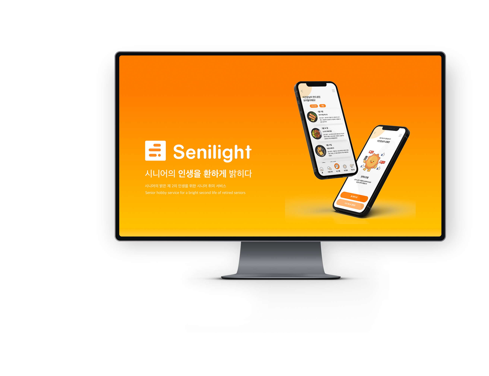

UX/UI SENILIGHT
SENILIGHT는 시니어들을 위한 취미 어플입니다. 실제 타겟층 설문조사를 통해 솔루션을 제작하였습니다. 또한 기존 타겟층 어플들과 달리 밝고 활기찬 디자인으로 제작하였습니다.
기여도 : 디자인 100%, 개발 100%
글꼴 : NOTOSANS

OVERVIEW
은퇴한 시니어들을 위한 취미 어플입니다. 시대가 변함에 따라 경제적 여유가 생긴 시니어들의 니즈를 실질적으로 조사하여 그에 맞는 플로우로 구성하였습니다.